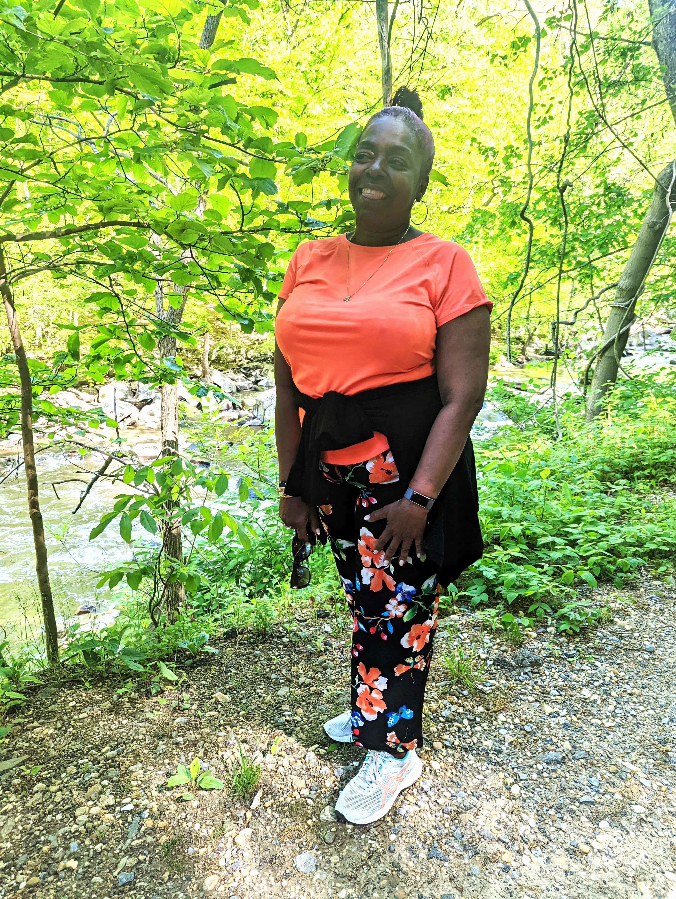

Meet Tanya, a very motivated woman who decided to join the IAWH Self-Measured Blood Pressure (SMBP) Hypertension Control Program after hearing about the program on her favorite radio show. She grew up in West Philadelphia, but has spent most of her adult life in the Washington, D.C. area, where she feels at home. Tanya has adopted a healthy cooking regime which has not only led to many physical benefits, but also provides her with much comfort and relaxation. Tanya loves walking in the park and has even found a walking buddy through the IAWH program. She wants to spread the message, “Love others enough by loving yourself.” Continue reading to learn more about Tanya and her health journey.
Q: Tell us about yourself. For example, where were you born, what you do for a living, your hobbies/interests/activities, how long have you lived where you live now? If you are not native to where you currently live, what brought you there?A: I am a 62y/o hypertensive African American woman. I currently live in the Adams Morgan subdivision of Northwest Washington, DC. I have lived in Adams Morgan for six of my forty years in the Washington, DC metropolitan area. I am an educator and personal assistant.
I was born and raised in West Philadelphia and attended Philadelphia schools. I also attended Temple University through my sophomore year and then attended Virginia Union University for 3 years. I then moved to DC to attend Howard University's School of Engineering. This geographic area has always presented opportunities for growth, as well as, a wide range of diverse cultural spaces. In DC I felt a sense of belonging and familiarity among the brownstones, the history and tree-lined streets of this city. I enjoy long scenic walks in and around Rock Creek Park. My favorite past-times include listening to jazz, attending plays and concerts and gardening. Recently, I discovered that creating healthy meals is relaxing. I get a rewarding feeling, while cutting, slicing and preparing wholesome healthy and tasty meals.
Q: When were you first diagnosed with hypertension? Many people immediately vow to make changes in their lives and to their lifestyles to avoid taking medication. Some people are shocked and had no idea that they had high blood pressure. What was your reaction?A: For most of my life I had been free from any physical illnesses. Aside from a childhood hernia and a recurrence in my twenties, I have been healthy and strong until I reached my early fifties. During a rare emergency room visit, for a serious depressive episode, vital signs indicated a blood pressure reading of 204/102. The attending emergency room physician ordered an EKG and decided that I would need to stay in the ER until my blood pressure lowered to a non-critical level.
Fourteen hours later I was admitted for acute depression and chronic hypertension. Upon release, I was given a prescription for 10mg once daily of Amlodipine Besylate. I now had a diagnosis of Hypertension Stage 2. The severity of my condition was never explained to me. There was never a conversation with the medical personnel about necessary changes to diet or adoption of healthier habits. So I left the hospital with a prescription in hand and went back to life as I knew it.
I never took the prescription to be filled at the pharmacy. Diet changes did not happen. Sodium intake remained detrimentally the same. Nothing changed, if nothing changed! Hypertension remained, silently effecting my organs. My 20/20 vision was no more. My annual physical exams revealed higher and higher blood pressure readings each year. The two primary care physicians that I had over the course of a ten-year period did take an interest. They tried to emphasize the impact that uncontrolled, untreated hypertension would have. On a recent visit to the dentist to have a small cavity filled, the procedure was denied when the dentist, upon taking my vitals, got a blood pressure reading of 201/90. The dentist ordered me to go to the hospital immediately. Admittedly, I had not complied with physician's prescribed medications. Low self-esteem, lack of discipline and complete lack of knowledge about the disease caused me to minimize my condition. The dentist’s warning was the very first time that I actually realized the urgency and severity of my hypertensive condition.
Immediately, after leaving the dentist I returned to my apartment and took my medication. Then I logged into my MyMedstar patient portal and left an urgent message for my primary care physician. My doctor urged me to schedule an appointment immediately. Within a week, the office visit took place. My physician did a medication review and recommended adding another medication to the regimen. This time, a conscious decision was made to adhere to all medical advice and prescribed medications. Shortly thereafter, I made a firm and critical decision to effectively and positively change my unhealthy habits.
Q: Were you surprised by your diagnosis of hypertension? Do you have a family history of hypertension or other chronic conditions? Do you know anyone else diagnosed with hypertension?A: Yes, I was surprised by my diagnosis.
Q: What steps did you initially take (with or without your health provider) to get your hypertension under control? Were these methods at all successful? Often health providers provide basic information on health conditions. Where did and do you look for information to learn more and stay current on hypertension control?A: Being at home all day during the COVID-19 pandemic, gave me the opportunity to plan my meals and grocery-shopping lists to be compatible with the well-balanced nutritional goals that I desired to accomplish. Drastically reducing or eliminating certain things like sodium, processed foods, and sugary snacks was a major change. Long walks around the neighborhood and nearby parks helped me focus on my resolve to get better and stay better, while, at the same time getting fit. I routinely took my medication. Drinking plenty of water was also something of importance to my lifestyle correction. I also read many research - based articles on diet and exercise.
Q: How has your lifestyle changed since? (What was your diet before diagnosis vs. after? Has your physical activity changed? How has your awareness and knowledge about your health changed?)A: A typical day’s food choices include, low fat organic Greek yogurt topped walnuts, almonds, fresh or frozen berries. I sprinkle chia or flax seeds on almost everything. Scrambled eggs are also a choice. Sardines, salmon, beans over long grain rice, Tuna fish open - faced sandwiches or boiled eggs, baked chicken, salads, string beans, cabbage, fresh vegetables of all sorts seasoned with herbs, garlic, onions and cooked with low sodium vegetable broth. Keeping track of my sodium intake is imperative. I have discovered that mindful meal planning and creative food preparation is exciting and delicious. The aroma of fresh wholesome foods is therapeutic. Passionate preparation of meals brings me joy and satisfaction.
Q: How did you learn about IAWH’s SMBP Program? What made you interested in participating? What have you gained from this program?A: One day, while listening to my favorite radio station, 89.3FM (WPFW Jazz and Justice) the talk segment of the hour featured one of the Co-Directors of the Institute For The Advancement Of Women's Health, She spoke about a program that would include 20 female hypertensive participants. I immediately believed that my participation would be a perfect opportunity to gain support and knowledge. I also hoped that a platform for accountability and networking would be available to me. I immediately completed the on-line application and was accepted into IAWH's Self-Monitoring Blood Pressure (SMBP) program. It was a very happy moment when I received notification of my acceptance into the group.
I made an honest commitment to wholeheartedly participate in the activities, virtual Small Groups and Lunch and Learn sessions with highly qualified medical, nutritional, fitness and other health professional and experts in their respective fields. The other women in the program have been highly supportive. They share with transparency their personal experiences, struggles and successes. I have made new acquaintances and friends whom I share the common goal for achieving quality lifestyles by improving our health standards.
Once a week, I and another Washington, DC participant meet up at a popular trail in Rock Creek Park and enjoy an hour long fresh air and scenic hike. It's rewarding and exhilarating! Even better, IAWH provides each participant with a Bluetooth OMRON Blood Pressure monitoring device. I take my blood pressure twice daily and it has become a part of a new routine that provided the accountability which I definitely wanted and needed.
I gratefully welcomed the feeling of being cared about. Happily, I can report that the biggest and best benefit and accomplishment from being one of the program participants has resulted in a major reduction of my average blood pressure readings. At the time of this writing, six-months after joining the SMBP program, my weekly average BP is 121sys/71dia. This is a 30-point lower difference in my systolic pressure. I joyfully report that I feel so much better. I received excellent information and tips from my co-participants. The women are friendly and willing to share.
Q: How and why did you decide to do this program?A: I wanted a support system that would bolster accountability.
Q: What have you gained from participating in this SMBP program? (What knowledge has been validated? What is something new that you learned or gained?
A: I have been able to share my weekly readings with my primary care provider. This was a valuable tool for my medication management. My primary care provider (PCP) was able to note any fluctuations or patterns that required attention or possible medication changes. I also used tools like my online Patient Portal to communicate with my physician. Also, valuable to me are the articles and essays shared through the IAWH's interactive online forum.

I have benefited from shared recipes and affirmations. The IAWH's SMBP program has been a priceless addition to my life and lifestyle. Although I recognize that progress is only sustainable with dedication and commitment, I realize that whole body health is physical, mental and spiritual maintenance. I have recently sought and acquired mental health services for therapy and emotional balance. I fellowship and worship with my spiritual family at my church. My health insurance qualified me for a free annual membership at The Anthony Bowen YMCA. My advice to others who have health challenges is to embrace the programs and services that are available. Seek out resources. "Love others enough by loving yourself”. Taking good care of yourself and your body, mind and soul is the best way to show love to others. I decided that it was selfish to possibly burden others by being too unhealthy to take care of myself. Therefore, it made better sense to avoid the pitfalls of poor health and rise up for better health and well-being each day that I am BLESSED with another day. Keeping this focus has allowed me a healthier outlook, lower blood pressure and potential to live a longer joyful life.
Q: How are you approaching and understanding the management of our blood pressure differently now that you've been in the IAWH program?A: After losing thirty pounds, I still strive and commit to leave the obese category. I know that weight management is very much a part of controlling or reversing hypertension. My goal is to lose thirty more pounds over the remainder of 2022. I view my weight loss as a major success and realize that more progress will follow.
Q: Where would you like to be healthwise in five years?A: In five years, I will be free and in normal BP range on a regular basis. I will be at a normal weight for my height. My body mass index (BMI) will have improved greatly.
Q: What advice would you give to others who may be considering, just beginning, restarting, or continuing on a health improvement or a hypertension control journey?A: If you need added support and accountability for your condition, the Institute for the Advancement of Women's Health Self-Monitoring Blood Pressure program is second to none. If they accept me again I will join the next group. It has been a super-fun, super- rewarding and supportive learning experience. From the professional and kind approach of the IAWH team, to the group of women that shared this experience with me for six months, it has been amazing. The other women in my group have enhanced my life in immeasurable ways.
Executive DirectorsWriter/Editor
Janine E. Payne, MPH Melissa Kluczynski, MS
Cheryl J. Thompson, M.S.P.H.
This article first appeared on the IAWH Health blog on June 16, 2022 and is preserved here as part of the IAWH Health Journal archive. Information reflects what was known at the time of publication. This article is for general education and is not medical advice.
Topics: Women's Health, Hypertension, SMBP, Mental Health, Food, Connection